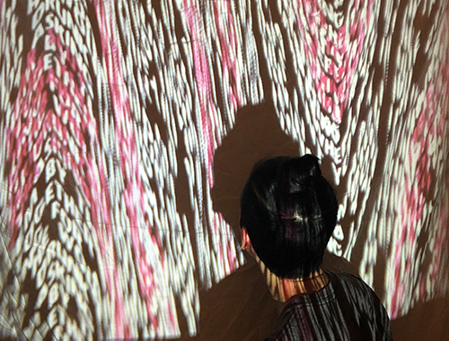

At Home Installation
"What My Body Has Seen" Created with Illustrator, Photoshop, Touchdesigner, and iMovie in ART 75 || 1920x1080
This Installation focuses on spreading awareness of sexual assault and empowers sexual assault survivors and to remind them they are not alone in their struggle. The intention is to put the viewer in the position of the survivor by sharing the survivors experiences. The victim-blaming words on the screen are glitched to signify how distorted and twisted these words are. The music is eerie in the beginning with the glitches shown but continues to become calming as the video continues and transitions into real experiences and feelings that survivors have experienced. There is a sense of sadness along with justice being brought to the situation about how much it takes for survivors to be heard and believed. The two dynamics in the video display how a survivor can feel when they are supported instead of judged and shamed.

